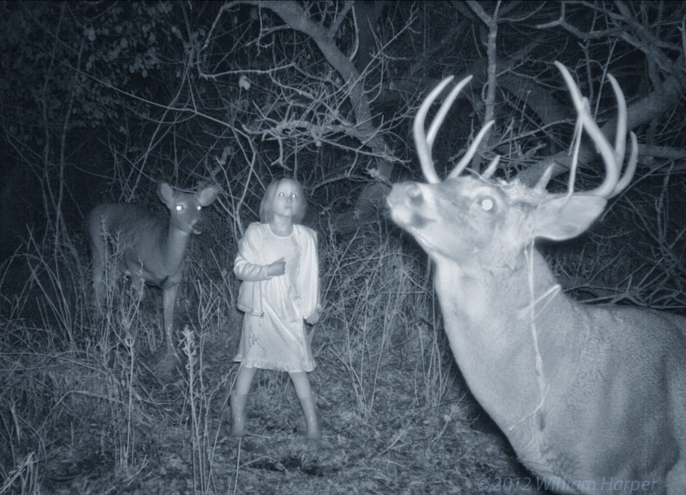

Much of the video and photography are from projects that observe line and path making in nature.
These studies illustrate the close relationship between the flight paths of birds and airplanes, the expression of plant growth, lightning, the fractures of decay, the building of roads and the formation of stream beds. Each path or line reveals a relationship to time, space, nature, and to individual and group histories and propensities.
The conditions shaping the lines in the flight paths of airplanes, the migration of ducks, and the growth of trees are the same as those which guide the hand of the painter: physics, history, genetics, and culture, and the idiosyncrasies of the artist’s own imagination.